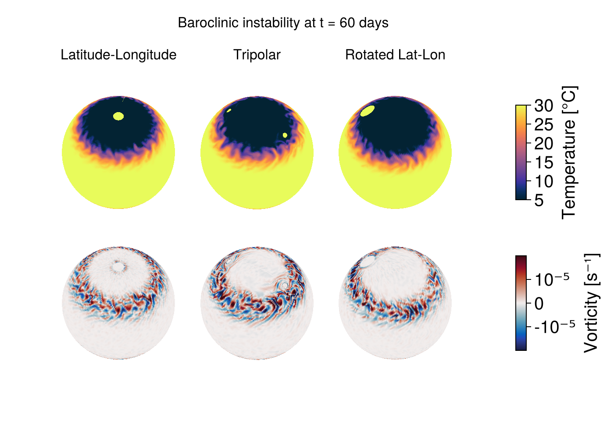

Baroclinic instability on the sphere
This example illustrates how to set up and run simulations of baroclinic instability on a spherical domain using three different spherical grid configurations: a standard latitude-longitude grid, a tripolar grid, and a rotated latitude-longitude grid.
Baroclinic instability is a fundamental mechanism for generating mesoscale eddies in the ocean and synoptic-scale weather systems in the atmosphere. The instability arises when horizontal density gradients (fronts) are tilted by the combined effects of Earth's rotation and stratification, converting available potential energy into kinetic energy.
In this example, we initialize a meridional temperature front that is baroclinically unstable, and watch eddies grow and equilibrate the front. We demonstrate this phenomenon on three different spherical grid types to illustrate the flexibility of Oceananigans for global ocean modeling.
This example also demonstrates:
- Using
BulkDragfor quadratic bottom drag boundary conditions - Applying drag only to the bottom facet of immersed boundaries
Install dependencies
First let's make sure we have all required packages installed.
using Pkg
pkg"add Oceananigans, CairoMakie, SeawaterPolynomials"Grid configurations
We set up three different spherical grids at 1.5-degree resolution. Each grid type has different advantages:
LatitudeLongitudeGrid: Straightforward, but suffers from converging meridians at the poles, and thus cannot cover a sphere without filtering.TripolarGrid: Avoids the North Pole singularity by introducing two computational poles over land (typically over North America and Eurasia). This grid was first introduced by Murray (1996) and is widely used in global ocean models.RotatedLatitudeLongitudeGrid: Rotates the grid's north pole to an arbitrary location, allowing finer resolution in a region of interest while avoiding the geographic poles.
using Oceananigans
using Oceananigans.Units
using SeawaterPolynomials.TEOS10: TEOS10EquationOfState
using CUDA
using Printf
using CairoMakieWe start by setting up grid parameters. We use 1.5-degree resolution to produce reasonable runtimes while still resolving the instability.
arch = GPU()
resolution = 3 // 2 # degrees
Nx = 360 ÷ resolution # number of longitude points
Ny = 170 ÷ resolution # number of latitude points (avoiding poles)
Nz = 10 # number of vertical levels
size = (Nx, Ny, Nz)
halo = (7, 7, 7) # halo size for higher-order advection schemes
H = 5000 # domain depth [m]
latitude = (-85, 85) # latitude range (avoiding poles for lat-lon grid)
longitude = (0, 360) # longitude range
z = (-H, 0) # vertical extent(-5000, 0)Next we build the three grids.
Latitude-Longitude grid
lat_lon_grid = LatitudeLongitudeGrid(arch; size, halo, latitude, longitude, z)240×113×10 LatitudeLongitudeGrid{Float64, Periodic, Bounded, Bounded} on CUDAGPU with 7×7×7 halo
├── longitude: Periodic λ ∈ [0.0, 360.0) regularly spaced with Δλ=1.5
├── latitude: Bounded φ ∈ [-85.0, 85.0] regularly spaced with Δφ=1.50442
└── z: Bounded z ∈ [-5000.0, 0.0] regularly spaced with Δz=500.0Tripolar grid
The tripolar grid has singularities ("north poles") at 55°N latitude by default.
underlying_tripolar_grid = TripolarGrid(arch; size, halo, z)240×113×10 OrthogonalSphericalShellGrid{Float64, Periodic, RightCenterFolded, Bounded} on CUDAGPU with 7×7×7 halo
├── centered at (λ, φ) = (250.0, 1.8005)
├── longitude: Periodic extent 360.157 degrees variably spaced with min(Δλ)=0.0180714, max(Δλ)=1.58055
├── latitude: RightCenterFolded extent 171.504 degrees variably spaced with min(Δφ)=0.0289882, max(Δφ)=1.51786
└── z: Bounded z ∈ [-5000.0, 0.0] regularly spaced with Δz=500.0We also use an ImmersedBoundaryGrid to place Gaussian mountains over the singularities to ensure the simulation remains stable. The tripolar grid places singularities at longitude first_pole_longitude and first_pole_longitude + 180°, both at latitude north_poles_latitude. By default, the first pole is at 70°E longitude and 55°N latitude.
σφ, σλ = 4, 8 # mountain extent in latitude and longitude (degrees)
λ₀, φ₀ = 70, 55 # first pole location
h = H + 1000 # mountain height above the bottom (m)
gaussian(λ, φ) = exp(-((λ - λ₀)^2 / 2σλ^2 + (φ - φ₀)^2 / 2σφ^2))
gaussian_mountains(λ, φ) = -H + h * (gaussian(λ, φ) + gaussian(λ - 180, φ) + gaussian(λ - 360, φ))
tripolar_grid = ImmersedBoundaryGrid(underlying_tripolar_grid, GridFittedBottom(gaussian_mountains))240×113×10 ImmersedBoundaryGrid{Float64, Periodic, RightCenterFolded, Bounded} on CUDAGPU with 7×7×7 halo:
├── immersed_boundary: GridFittedBottom(mean(z)=-4790.49, min(z)=-5000.0, max(z)=0.0)
├── underlying_grid: 240×113×10 OrthogonalSphericalShellGrid{Float64, Periodic, RightCenterFolded, Bounded} on CUDAGPU with 7×7×7 halo
├── centered at (λ, φ) = (250.0, 1.8005)
├── longitude: Periodic extent 360.157 degrees variably spaced with min(Δλ)=0.0180714, max(Δλ)=1.58055
├── latitude: RightCenterFolded extent 171.504 degrees variably spaced with min(Δφ)=0.0289882, max(Δφ)=1.51786
└── z: Bounded z ∈ [-5000.0, 0.0] regularly spaced with Δz=500.0Rotated latitude-longitude grid
The rotated latitude-longitude grid rotates the north pole to an arbitrary location. Here we place the grid's north pole at (70°E, 55°N) to coincide with the default singularities of TripolarGrid.
rotated_lat_lon_grid = RotatedLatitudeLongitudeGrid(arch; size, halo, latitude, longitude, z,
north_pole = (70, 55))240×113×10 OrthogonalSphericalShellGrid{Float64, Periodic, Bounded, Bounded} on CUDAGPU with 7×7×7 halo
├── centered at (λ, φ) = (-110.0, 35.0)
├── longitude: Periodic extent 360.0 degrees variably spaced with min(Δλ)=0.130734, max(Δλ)=1.49987
├── latitude: Bounded extent 170.0 degrees variably spaced with min(Δφ)=1.50442, max(Δφ)=1.50442
└── z: Bounded z ∈ [-5000.0, 0.0] regularly spaced with Δz=500.0Model setup
We create a function that builds a HydrostaticFreeSurfaceModel for any of our grids. Each model is configured with:
- WENO advection for both momentum and tracers
- Spherical Coriolis force appropriate for hydrostatic dynamics
- Realistic seawater buoyancy using the TEOS-10 equation of state
- Split-explicit free surface for fast external gravity wave dynamics
- Quadratic bottom drag using
BulkDrag, which computes a stress proportional toCᴰ |u| uwhereCᴰis the drag coefficient. - An initial condition that involves
- A temperature front centered at ±45° latitude
- Vertical salinity stratification
- Random noise in both to seed instability
function build_model(grid)
momentum_advection = WENOVectorInvariant(order=5)
tracer_advection = WENO(order=5)
coriolis = HydrostaticSphericalCoriolis()
equation_of_state = TEOS10EquationOfState()
buoyancy = SeawaterBuoyancy(; equation_of_state)
free_surface = SplitExplicitFreeSurface(grid; substeps=80)
# Apply bottom drag to both domain boundaries and immersed boundaries.
# For immersed boundaries, use ImmersedBoundaryCondition to apply drag
# only to the bottom facet.
drag = BulkDrag(coefficient=2e-3)
u_bcs = FieldBoundaryConditions(bottom=drag, immersed=ImmersedBoundaryCondition(bottom=drag))
v_bcs = FieldBoundaryConditions(bottom=drag, immersed=ImmersedBoundaryCondition(bottom=drag))
boundary_conditions = (; u=u_bcs, v=v_bcs)
model = HydrostaticFreeSurfaceModel(grid; coriolis, free_surface, buoyancy,
tracers = (:T, :S),
momentum_advection, tracer_advection,
boundary_conditions)
# Initial conditions
Tᵢ(λ, φ, z) = 30 * (1 - tanh((abs(φ) - 45) / 8)) / 2 + rand()
Sᵢ(λ, φ, z) = 28 - 5e-3 * z + rand()
set!(model, T=Tᵢ, S=Sᵢ)
return model
endbuild_model (generic function with 1 method)Simulation runner
We define a function that sets up and runs a simulation on a given grid, along with a progress callback that prints the velocity and temperature range as the simulation runs. We run for 60 days to observe the initial development of the instability while keeping computational costs reasonable.
# Simulation runner
function run_baroclinic_instability(grid, name; stop_time=60days, save_interval=24hours)
model = build_model(grid)
simulation = Simulation(model; Δt=8minutes, stop_time)
# Progress callback
function progress(sim)
T = sim.model.tracers.T
u, v, w = sim.model.velocities
msg = @sprintf("%s grid, iter % 4d: % 10s, max|u|: (%.2e, %.2e, %.2e)",
name, iteration(sim), prettytime(sim),
maximum(abs, u), maximum(abs, v), maximum(abs, w))
msg *= @sprintf(", T ∈ (%.2f, %.2f)", minimum(T), maximum(T))
@info msg
return nothing
end
add_callback!(simulation, progress, IterationInterval(1000))
# Set up output: save vorticity and temperature at the surface
u, v, w = model.velocities
T = model.tracers.T
ζ = ∂x(v) - ∂y(u)
fields = (; ζ, T)
indices = (:, :, grid.Nz)
filename = "spherical_baroclinic_instability_" * name * ".jld2"
simulation.output_writers[:surface] = JLD2Writer(model, fields; indices, filename,
schedule = TimeInterval(save_interval),
overwrite_existing = true)
run!(simulation)
return filename
endrun_baroclinic_instability (generic function with 1 method)Run the simulations
Now we run simulations on all three grids.
names = ("lat_lon", "tripolar", "rotated_lat_lon") # To fix ordering of plots
results = Dict(
"lat_lon" => run_baroclinic_instability(lat_lon_grid, "lat_lon"),
"tripolar" => run_baroclinic_instability(tripolar_grid, "tripolar"),
"rotated_lat_lon" => run_baroclinic_instability(rotated_lat_lon_grid, "rotated_lat_lon")
)Dict{String, String} with 3 entries:
"rotated_lat_lon" => "spherical_baroclinic_instability_rotated_lat_lon.jld2"
"tripolar" => "spherical_baroclinic_instability_tripolar.jld2"
"lat_lon" => "spherical_baroclinic_instability_lat_lon.jld2"Visualization
We make a three-dimensional visualization of our results on the sphere with CairoMakie. First we load the output from each simulation,
T_ts = Dict()
ζ_ts = Dict()
for (name, filename) in results
T_ts[name] = FieldTimeSeries(filename, "T")
ζ_ts[name] = FieldTimeSeries(filename, "ζ")
end
times = T_ts["lat_lon"].times
Nt = length(times)61Next we make a plot showing baroclinic instability on all three grids, visualized on 3D spheres. Each column shows a different grid type, with temperature on top and vorticity on the bottom.
fig = Figure(size = (700, 500))
n = Nt
title_str = @lift "Baroclinic instability at t = " * prettytime(times[$n])
Label(fig[1, 1:4], title_str, fontsize = 16)
labels = Dict("lat_lon" => "Latitude-Longitude",
"tripolar" => "Tripolar",
"rotated_lat_lon" => "Rotated Lat-Lon")
axes_T = Dict()
axes_ζ = Dict()
kw = (elevation=deg2rad(50), azimuth=deg2rad(190), aspect=:equal)
for (col, name) in enumerate(names)
Label(fig[2, col], labels[name], fontsize = 16, tellwidth=false)
axes_T[name] = Axis3(fig[3, col]; kw...)
axes_ζ[name] = Axis3(fig[4, col]; kw...)
endWe use surface!, which has a special extension for Oceananigans fields, to plot temperature and vorticity at the final time step on a three-dimensional representation of the sphere,
plots_T = Dict()
plots_ζ = Dict()
for name in keys(results)
Tn = T_ts[name][n]
ζn = ζ_ts[name][n]
plots_T[name] = surface!(axes_T[name], Tn; colormap = :thermal, colorrange = (5, 30))
plots_ζ[name] = surface!(axes_ζ[name], ζn; colormap = :balance, colorrange = (-2e-5, 2e-5))
hidedecorations!(axes_T[name])
hidedecorations!(axes_ζ[name])
hidespines!(axes_T[name])
hidespines!(axes_ζ[name])
end
colgap!(fig.layout, 1, Relative(-0.2))
colgap!(fig.layout, 2, Relative(-0.2))
rowgap!(fig.layout, 2, Relative(-0.1))
rowgap!(fig.layout, 3, Relative(-0.3))
Colorbar(fig[3, 4], plots_T["lat_lon"], label="Temperature [°C]", height=Relative(0.5))
ticks = ([-1e-5, 0, 1e-5], ["-10⁻⁵", "0", "10⁻⁵"])
Colorbar(fig[4, 4], plots_ζ["lat_lon"]; ticks, label="Vorticity [s⁻¹]", height=Relative(0.5))

References
- Murray, R. J. (1996). Explicit generation of orthogonal grids for ocean models. Journal of Computational Physics, 126(2), 251-273. doi:10.1006/jcph.1996.0136
Julia version and environment information
This example was executed with the following version of Julia:
using InteractiveUtils: versioninfo
versioninfo()Julia Version 1.12.4
Commit 01a2eadb047 (2026-01-06 16:56 UTC)
Build Info:
Official https://julialang.org release
Platform Info:
OS: Linux (x86_64-linux-gnu)
CPU: 128 × AMD EPYC 9374F 32-Core Processor
WORD_SIZE: 64
LLVM: libLLVM-18.1.7 (ORCJIT, znver4)
GC: Built with stock GC
Threads: 1 default, 1 interactive, 1 GC (on 128 virtual cores)
Environment:
LD_LIBRARY_PATH =
JULIA_PKG_SERVER_REGISTRY_PREFERENCE = eager
JULIA_DEPOT_PATH = /var/lib/buildkite-agent/.julia-oceananigans
JULIA_PROJECT = /var/lib/buildkite-agent/Oceananigans.jl-29413/docs/
JULIA_VERSION = 1.12.4
JULIA_LOAD_PATH = @:@v#.#:@stdlib
JULIA_VERSION_ENZYME = 1.10.10
JULIA_PYTHONCALL_EXE = /var/lib/buildkite-agent/Oceananigans.jl-29413/docs/.CondaPkg/.pixi/envs/default/bin/python
JULIA_DEBUG = Literate
These were the top-level packages installed in the environment:
import Pkg
Pkg.status()Status `~/Oceananigans.jl-29413/docs/Project.toml`
[79e6a3ab] Adapt v4.4.0
[052768ef] CUDA v5.9.6
[13f3f980] CairoMakie v0.15.8
[e30172f5] Documenter v1.16.1
[daee34ce] DocumenterCitations v1.4.1
[033835bb] JLD2 v0.6.3
[63c18a36] KernelAbstractions v0.9.40
[98b081ad] Literate v2.21.0
[da04e1cc] MPI v0.20.23
[85f8d34a] NCDatasets v0.14.11
[9e8cae18] Oceananigans v0.104.5 `..`
[f27b6e38] Polynomials v4.1.0
[6038ab10] Rotations v1.7.1
[d496a93d] SeawaterPolynomials v0.3.10
[09ab397b] StructArrays v0.7.2
[bdfc003b] TimesDates v0.3.3
[2e0b0046] XESMF v0.1.6
[b77e0a4c] InteractiveUtils v1.11.0
[37e2e46d] LinearAlgebra v1.12.0
[44cfe95a] Pkg v1.12.1
This page was generated using Literate.jl.